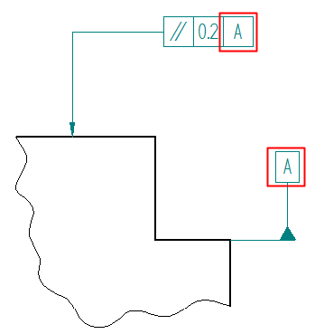
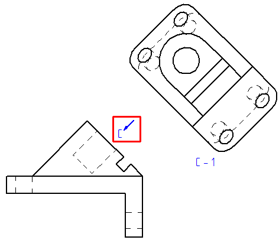

Using reference text
You can use reference text to extract information from annotations for the purpose of inserting it into other annotations. You also can extract text from drawing views for display in annotations.
Reference text is a form of property text. You can use reference text and property text together. Use the Select Reference Text dialog box to access and reuse individual text strings in annotations and drawing views.
Reference text examples
- Referencing information in feature control frames and datum frames
-
A simple example of how you can use reference text is to create a cross-reference between a datum frame and a feature control frame. When the datum letter updates, so does the feature control frame.

- Referencing information in drawing views
-
You can reference information in a drawing view caption, and include this information in a callout or text box. For example, you can create a callout titled NOTES, select the Show border outline option, and then compose callout text consisting of plain text and derived text that references:
-
The view annotation caption on an auxiliary view (View C) or a section view (A-A).
-
The sheet number where the auxiliary view or section view is located.
-
The view scale of the auxiliary view or section view.
Example:You can reference the view annotation name of this auxiliary view plane label and show it in an annotation such as a text box or callout.

-
- Using reference text in drawing title blocks
-
You can use reference text to add and update information in a drawing title block. For example, you can reference document properties, such as the project name and the document file name. One way to do this is:
-
Display and edit a background sheet with a title block.
-
Place a callout in the title block for each document property that you want to reference.
-
In the Callout Properties dialog box, insert reference text, and set Source type=Callout as the source of the text to reference. This exposes document-related properties, such as the %{File Name}, %{Title}, %{Document Number}, and SHEET %{Sheet Number} OF %{Number of Sheets}, which you can extract into the callout in the title block.
This displays the current value for each reference text callout in the title block.
-
Sources of reference text
You can reference the text areas in the following types of annotations:
-
Balloons (upper, lower, prefix, suffix)
-
Callouts
-
Datum frames
-
Datum targets (reference, number)
-
Drawing view captions and properties
-
GOST weld symbols—You can extract reference text from, and insert reference text into, the following four text fields:

-
Numbered items in technical requirements lists
No
Content
1.
Break all sharp edges at 1:00 mm.
2.
Paint non-machined surfaces blue.
-
View annotations—You can reference the properties and caption information from:
-
Cutting plane lines, which are used to create section drawing views.
-
Detail view envelopes, which are used to create detail views.
-
Auxiliary view planes, which are used to create auxiliary views.
-
Where you can use reference text
You can insert reference text into the following types of annotations:
-
Balloons
-
Callouts
-
Feature control frames
-
GOST weld symbols
-
Text boxes
-
Technical requirements
Inserting reference text
Use the Select Reference Text dialog box to locate, select, and insert reference text into eligible annotations.
You can open the dialog box using the Reference Text button  , which is located:
, which is located:
-
On the General tab in the Properties dialog box for each type of annotation.
-
On some annotation command bars.
-
On the Caption tab:
-
In the Drawing View Properties dialog box for a selected drawing view.
-
In the View Annotation Properties dialog box for a selected view annotation.
-
In the Drawing View Style dialog box.
-
How do I
Create property textCreate reference text
Format property text values
Update all property text
Convert property text
Convert all property text in a drawing or model
Learn more
Referencing propertiesUsing property text
Using exposed variables in property text
Look up more details
Select Property Text dialog boxSelect Symbols and Values dialog box
Select Reference Text dialog box
Format Values dialog box
Selecting a property text source
Basic reference and property text rules
Property text codes
Format codes to modify reference and property text output
Date and time format of property text
Property Text source list (Source: From Active Document)
Property text from drawing views
Property text from blocks
Property Text command
Update All Property Text command
Convert Property Text command
Convert All Property Text command